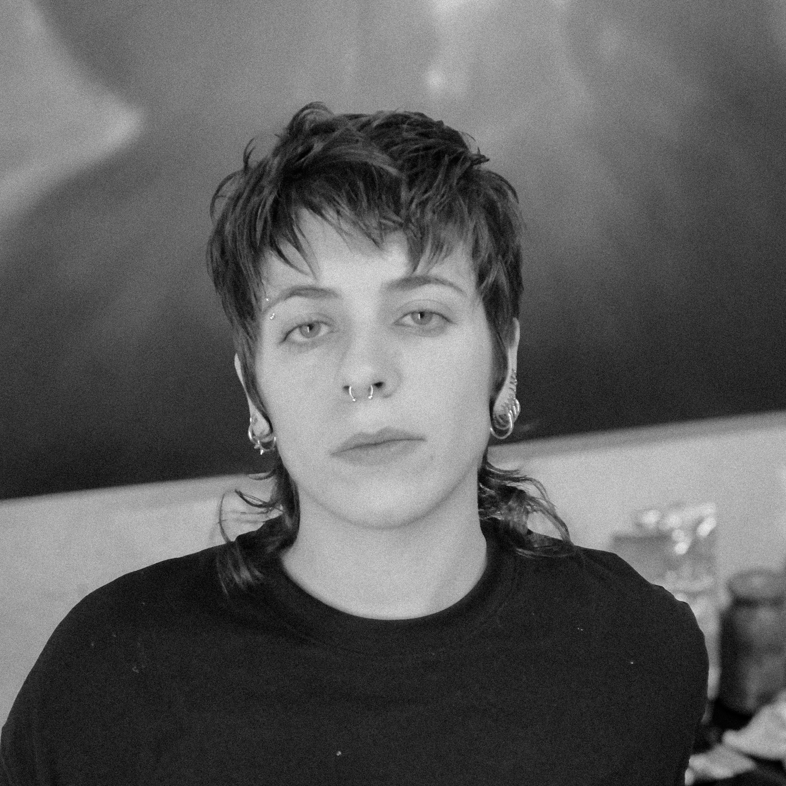

Guade Estienne (Buenos Aires, 1999) es artista visual y licenciade en Artes Visuales por la Universidad Nacional de las Artes (UNA). Su práctica artística se centra en la indagación de la identidad, entendida no como una condición fija o estable, sino como un territorio móvil atravesado por la subjetividad, la flexibilidad y la posibilidad de una transformación constante. A través de la pintura, explora preguntas vinculadas a la pertenencia, el desarraigo, los vínculos afectivos y las formas en que la experiencia individual se entrelaza con la de los demás, desplazando progresivamente la noción de un “yo” hacia un “nosotros” en permanente construcción.
Su trabajo se desarrolla a partir de un archivo fotográfico propio, del cual selecciona imágenes que condensan estas inquietudes y las traduce al lenguaje pictórico mediante el uso de óleo y acuarela. En sus obras recurre sistemáticamente al desenfoque y la veladura, construyendo imágenes situadas en un umbral entre la presencia y la ausencia. Dentro de esta búsqueda, el retrato ocupa un lugar central: más que representar identidades estables, sus pinturas exploran estados de tránsito, fragilidad e incertidumbre, donde las figuras permanecen reconocibles al mismo tiempo que comienzan a disolverse.
En 2024 realizó un intercambio académico en la Universitat Politècnica de València a través del programa PROMOE. Entre 2023 y 2025 fue becade del Taller Gráfica P/A y actualmente forma parte del programa de artistas MANGLAR. En 2024 año realizó su primera exposición individual, “Latidos íntimos”, en el Teatro Círculo Benimaclet de Valencia, España. Durante 2025 su obra fue exhibida en el Museo Sívori (Salón de Artes Plásticas Manuel Belgrano, edición 69), el Museo Pettoruti (Salón Provincial de Arte Joven), la galería Departamento 112 y la Casa Nacional del Bicentenario (Premio Prilidiano Pueyrredón), donde recibió una mención por su obra “El mar entre nosotros”. En 2026 volvió a participar del Salón Provincial de Arte Joven, donde obtuvo una mención por “El hastío de lo leve”; integró la muestra colectiva “Maquillaje para el escape” en Departamento 112 y presentó, junto a Pilar Frelliaro, la exposición “El lugar que falta” en la Casa de la Cultura de Vicente López.